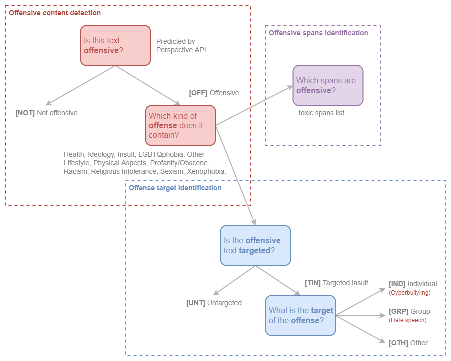
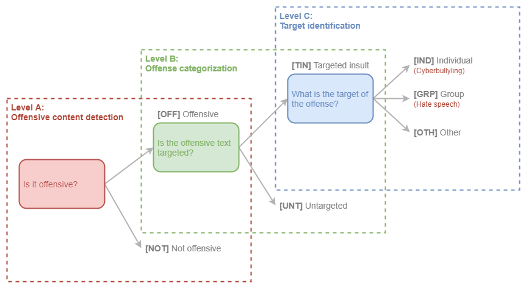

OLID-BR#
OLID-BR contém uma coleção de comentários em Português do Brasil anotados que abrangem os seguintes níveis:

Categorização#
Offensive content detection#
Este nível é usado para detectar conteúdo ofensivo em uma frase.
Este texto é ofensivo?#
Nós utilizamos a Perspective API para detectar se um comentário é ofensivo ou não. Adicionalmente, nossos anotadores reclassificaram comentários identificados como ofensivos incorretamente.
OFF: O comentário é ofensivo.NOT: O comentário não é ofensivo.
Qual tipo de ofensa o texto contém?#
Os rótulos abaixo foram anotados pelos nossos anotadores.
Health, Ideology, Insult, LGBTQphobia, Other-Lifestyle, Physical Aspects, Profanity/Obscene, Racism, Religious Intolerance, Sexism e Xenophobia.
Veja Glossary para maiores informações.
Offense target identification#
Este nível é usado para detectar se um comentário ofensivo é direcionado a um indivíduo, grupo de pessoas ou outros.
Este comentário ofensivo é direcionado a alguém?#
TIN: O comentário é direcionado a um indivíduo, grupo de pessoas ou outros.UNT: O comentário não é direcionado.
Qual o alvo do comentário ofensivo?#
IND: O comentário é direcionado a um indivíduo. Também conhecido como Cyberbullying.GRP: O comentário é direcionado a um grupo de pessoas. Também conhecido como Hate Speech.OTH: O comentário é direcionado a outras categorias, como uma organização, um evento, etc.
Offensive spans identification#
Os toxic spans fornecem uma lista com os caracteres de um determinado comentário que são considerados ofensivos.
Por exemplo, vamos considerar o comentário:
"USER
CanalhaURL"
Os toxic spans são:
1 | |
OLID (Inglês)#
O OLID (com comentários em inglês) foi um dataset referência para o OLID-BR. Ele contém 14.100 comentários anotados usando uma anotação hierárquica. Cada instância contém até 3 rótulos cada um correspondente a um dos seguintes níveis:
- Level A: Offensive Language Detection
- Level B: Categorization of Offensive Language
- Level C: Offensive Language Target Identification

OLID foi usado como dataset de benchmark em OffensEval: Identifying and Categorizing Offensive Language in Social Media (SemEval 2019 - Task 6).
Como o dataset foi gerado?#
Os exemplos foram obtidos a partir do Twitter usando a Twitter API e procurando por palavras-chave e construções que são frequentemente incluídas em mensagens ofensivas, veja a tabela abaixo para a lista de palavras-chave:
| Keyword | Offensive % |
|---|---|
| medical marijuana | 0.0 |
| they are | 5.9 |
| to:NewYorker | 8.3 |
| you are | 21.0 |
| she is | 26.6 |
| to:BreitBartNews | 31.6 |
| he is | 32.4 |
| gun control | 34.7 |
| -filter:safe | 58.9 |
| conservatives | 23.2 |
| antifa | 26.7 |
| MAGA | 27.7 |
| liberals | 38.0 |
A palavra-chave que resultou na maior concentração de linguagem ofensiva foi a palavra-chave "safe", que corresponde aos tweets que foram marcados como seguros pelo Twitter (o símbolo ‘-’ indica ‘não seguro’).
O dataset foi anotado por crowdsourcing. Os gold labels foram atribuídos levando em consideração o acordo de três anotadores. Nenhuma correção foi realizada nas anotações do crowdsourcing.
Os usuários que foram mencionados no Twitter foram substituídos por @USER. As URLs foram substituídas por URL.
Resumo dos dados#
| A | B | C | Training | Test | Total |
|---|---|---|---|---|---|
| OFF | TIN | IND | 2,407 | 100 | 2,507 |
| OFF | TIN | OTH | 395 | 35 | 430 |
| OFF | TIN | GRP | 1,074 | 78 | 1,152 |
| OFF | UNT | — | 524 | 27 | 551 |
| NOT | — | — | 8,840 | 620 | 9,460 |
| All | 13,240 | 860 | 14,100 |
-
Zampieri et al. "Predicting the type and target of offensive posts in social media." NAACL 2019. ↩
-
João A. Leite, Diego F. Silva, Kalina Bontcheva, Carolina Scarton (2020): Toxic Language Detection in Social Media for Brazilian Portuguese: New Dataset and Multilingual Analysis. Published at AACL-IJCNLP 2020. ↩
-
S. Malmasi, "Offensive Language Identification Dataset - OLID", Scholar.harvard.edu, 2021. [Online]. Available: https://scholar.harvard.edu/malmasi/olid. [Accessed: 28- Aug- 2021]. ↩
-
Weng, L. (2021, March 21). Reducing toxicity in language models. Lil'Log. https://lilianweng.github.io/lil-log/2021/03/21/reducing-toxicity-in-language-models.html. ↩